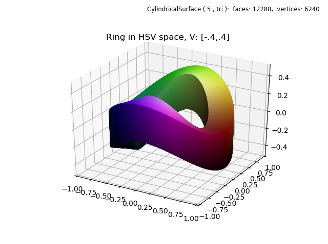
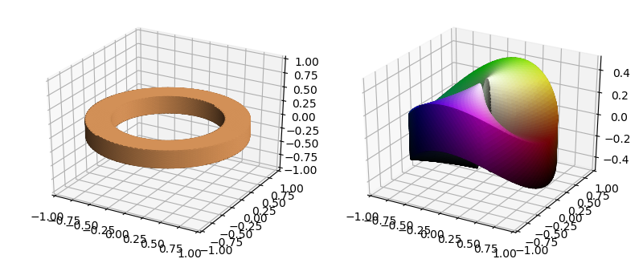

Functional HSV Color Mapping¶
This example is based on the Matplotlib function used in the cylindrical volumetric plot example.
import numpy as np
import matplotlib.pyplot as plt
import s3dlib.surface as s3d
#.. Functional HSV Color Mapping
# 1. Define functions to examine ....................................
width, height, amp = 0.4, 0.4, 0.2
def hsvColor(rtz) :
r,t,z = rtz
H = t/(2*np.pi)
S = r
scale = amp + height/2
Z = z/scale # so that: -1 < Z 1
V = (Z+1)/2
return H,S,V # all values are in [0,1]
def warp(rtz,amp) :
r,t,z = rtz
offset = -amp*np.cos(2*t)
return r,t,z+offset
def Ring(rez, width, height) :
# .....................................................
def fold(rtz,width,height) :
r,t,z = rtz
zeros = np.zeros(len(z))
width_ar = np.full(len(z),width)
# fold the cylinder into 4 parts..
alpha = -2*width*z+width
alpha = np.where( z <= 0.5, zeros , alpha )
alpha = np.where( z <= 0.0, 2*width*z , alpha )
alpha = np.where( z <= -.5, -width_ar , alpha )
beta = height
beta = np.where( z <= 0.5, 2*height*z, beta)
beta = np.where( z <= 0.0, zeros, beta)
beta = np.where( z <= -.5, -2*height*z-height, beta)
R = r + alpha
Z = beta - height/2
return R,t,Z
# .....................................................
surface = s3d.CylindricalSurface(rez)
surface.map_geom_from_op( lambda rtz : fold(rtz,width,height) )
return surface
# 2. Setup and map surfaces .........................................
rez = 5
surface = Ring(rez,width,height)
surface.map_geom_from_op( lambda rtz : warp(rtz,amp) )
surface.map_color_from_op(hsvColor, rgb=False)
surface.transform(scale=[0.9,0.9,1])
surface.shade().hilite(.5)
# 3. Construct figure, add surfaces, and plot ......................
fig = plt.figure()
fig.text(0.975,0.975,str(surface), ha='right', va='top',
fontsize='smaller', multialignment='right')
ax = plt.axes(projection='3d')
ax.set(xlim=(-1,1), ylim=(-1,1), zlim=(-.5,.5))
ax.set_title('Ring in HSV space, V: [-.4,.4]')
ax.add_collection3d(surface)
plt.show()
A cylindrical surface is first mapped to a flat ring using the ‘Ring()’ function. The figure at the below left is a result of a direct call to this function, resulting in an intermediate surface. Then, this surface only calls the ‘warp()’ function for geometric mapping. This multiple mapping technique was used in the Multiple Geometric Maps example.
The color is simply a result of using the rtz coordinates in hsv space. The variation of saturation in the radial direction is more apparent with a thicker surface as shown in the figure at the lower right. HSV space is more clearly illustrated in the Color Space example and the HSV Mapping animation.
